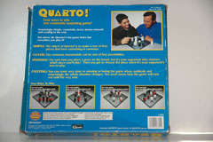
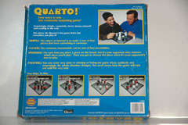

|
 |

|

|

|
Yanpei Chen, Amy Hsueh, and Mario Tanev
References:
Gigamic Games
History
Quarto is published Gigamic.
Game Play
The Pieces:
There are 16 pieces, which have four different attributes:
1. Height: large or small
2. Color: light or dark
3. Shape: square or circle
4. Solid or hollow
Rules:
To move: Players alternate turns choosing a piece which their opponent will place on the board.
To win: The first person to get four pieces in a row along any one of the dimensions: height, color, shape, solid or hollow.
Players take turns selecting their opponent's piece. Once your opponent has selected a piece, you must place it on the board in any open spot. The first person to get four in a row, either diagonally, horizontally or vertically wins. The catch is that the pieces that are lined up must share the same attributes.
Variants:
Board size: Change the board dimensions to make it bigger or smaller
Pictures:
|
|
 |
|
|
|
|
References:
Gigamic Games